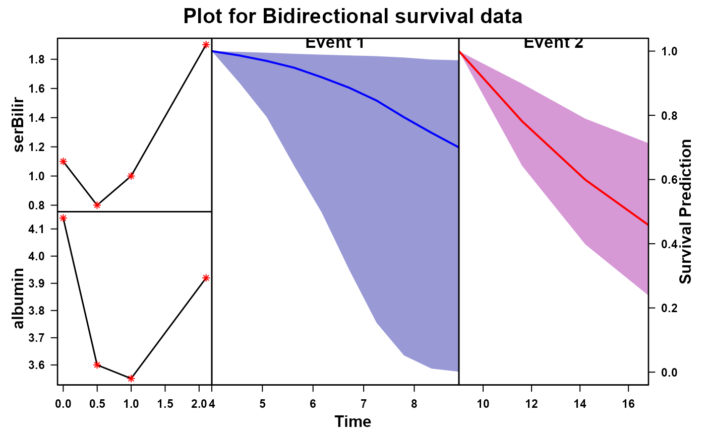

Prediction plot from jmstB()
plot.jmstB.RdPrediction plot from jmstB()
Usage
# S3 method for jmstB
plot(x, y, ...)Value
Returns prediction plot for the newdata using the model fitted through jmstB().
Note
In the example code we use newdata as the data for ID 2 in the PBC2 dataset, it has follow up information till 8.832. Now suppose we want to look at the survival of ID 2 under joint model 1 after time 4 and for joint model 2 after time 9. For that we created the newdata as if the individual is followed till for a time period less than min(4,9).
Examples
# \donttest{
##
library(JMbayes2)
library(rstanarm)
st_pbcid<-function(){
new_pbcid<-pbc2.id
new_pbcid$time_2<-rexp(n=nrow(pbc2.id),1/10)
cen_time<-runif(nrow(pbc2.id),min(new_pbcid$time_2),max(new_pbcid$time_2))
status_2<-ifelse(new_pbcid$time_2<cen_time,1,0)
new_pbcid$status_2<-status_2
new_pbcid$time_2<-ifelse(new_pbcid$time_2<cen_time,new_pbcid$time_2,cen_time)
new_pbcid$time_2<-ifelse(new_pbcid$time_2<new_pbcid$years,new_pbcid$years,new_pbcid$time_2)
new_pbcid
}
new_pbc2id<-st_pbcid()
pbc2$status_2<-rep(new_pbc2id$status_2,times=data.frame(table(pbc2$id))$Freq)
pbc2$time_2<-rep(new_pbc2id$time_2,times=data.frame(table(pbc2$id))$Freq)
pbc2_new<-pbc2[pbc2$id%in%c(1:50),]
new_pbc2id<-new_pbc2id[new_pbc2id$id%in%c(1:50),]
model_jmstBdirect<-jmstB(
dtlong=pbc2_new,
dtsurv = new_pbc2id,
longm=list(serBilir ~ drug * year+(year|id),albumin~drug+year+(year|id)),
survm=list(Surv(years,status2) ~ drug,Surv(time_2,status_2) ~ drug),
timeVar="year",
id='id',
refresh=400,
nchain=1)
#> Fitting a univariate joint model.
#>
#> Please note the warmup may be much slower than later iterations!
#>
#> SAMPLING FOR MODEL 'jm' NOW (CHAIN 1).
#> Chain 1:
#> Chain 1: Gradient evaluation took 0.000363 seconds
#> Chain 1: 1000 transitions using 10 leapfrog steps per transition would take 3.63 seconds.
#> Chain 1: Adjust your expectations accordingly!
#> Chain 1:
#> Chain 1:
#> Chain 1: Iteration: 1 / 2000 [ 0%] (Warmup)
#> Chain 1: Iteration: 400 / 2000 [ 20%] (Warmup)
#> Chain 1: Iteration: 800 / 2000 [ 40%] (Warmup)
#> Chain 1: Iteration: 1001 / 2000 [ 50%] (Sampling)
#> Chain 1: Iteration: 1400 / 2000 [ 70%] (Sampling)
#> Chain 1: Iteration: 1800 / 2000 [ 90%] (Sampling)
#> Chain 1: Iteration: 2000 / 2000 [100%] (Sampling)
#> Chain 1:
#> Chain 1: Elapsed Time: 63.009 seconds (Warm-up)
#> Chain 1: 66.883 seconds (Sampling)
#> Chain 1: 129.892 seconds (Total)
#> Chain 1:
#> Fitting a univariate joint model.
#>
#> Please note the warmup may be much slower than later iterations!
#>
#> SAMPLING FOR MODEL 'jm' NOW (CHAIN 1).
#> Chain 1:
#> Chain 1: Gradient evaluation took 0.00052 seconds
#> Chain 1: 1000 transitions using 10 leapfrog steps per transition would take 5.2 seconds.
#> Chain 1: Adjust your expectations accordingly!
#> Chain 1:
#> Chain 1:
#> Chain 1: Iteration: 1 / 2000 [ 0%] (Warmup)
#> Chain 1: Iteration: 400 / 2000 [ 20%] (Warmup)
#> Chain 1: Iteration: 800 / 2000 [ 40%] (Warmup)
#> Chain 1: Iteration: 1001 / 2000 [ 50%] (Sampling)
#> Chain 1: Iteration: 1400 / 2000 [ 70%] (Sampling)
#> Chain 1: Iteration: 1800 / 2000 [ 90%] (Sampling)
#> Chain 1: Iteration: 2000 / 2000 [100%] (Sampling)
#> Chain 1:
#> Chain 1: Elapsed Time: 25.665 seconds (Warm-up)
#> Chain 1: 14.086 seconds (Sampling)
#> Chain 1: 39.751 seconds (Total)
#> Chain 1:
t0<-4
nd<-pbc2[pbc2$id %in% c(2), ]
nd<-nd[nd$year<t0,]
nd$status2<-0
nd$years<-t0
nd$time_2<-9
nd$status_2<-0
plot(x=model_jmstBdirect,y = nd)
#> Drawing new random effects for 1 individuals. Monitoring progress:
#>
|
| | 0%
|
|======================================================================| 100%
#> Drawing new random effects for 1 individuals. Monitoring progress:
#>
|
| | 0%
|
|======================================================================| 100%

##
# }